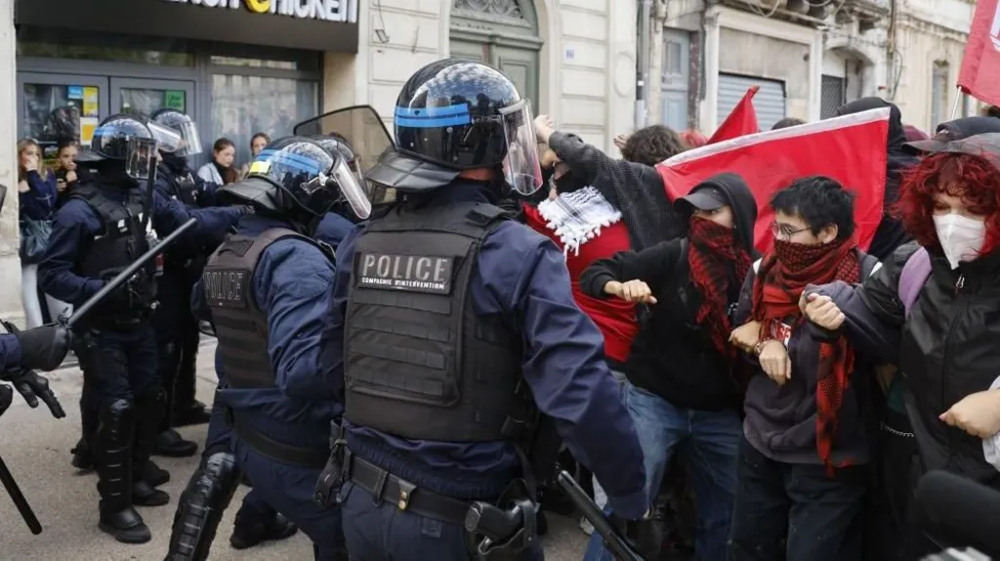

| Home | world | Pakistan | Business | Science | Sports | Technology | Entertainment | Health | Trending | Contact |
|---|

Riot police have clashed with protesters as thousands of students demonstrating over education standards disrupted more than 700 schools in France on Friday.
Fires have burned in the streets as high school pupils and others objected to a lack of teachers, overcrowded classrooms and run-down buildings.
The protests began last week in the capital Paris and have spread across the country, with cities including Montpellier, Nantes and Marseille affected.
French justice minister Gerald Darmanin said things had "gone from high-school student demonstrations to a public order disturbance".
On Friday, a 17-year-old was arrested on suspicion of attempted homicide after protests in Belfort, north-eastern France, where a police officer was targeted.
BBC Verify has now authenticated two videos that show the man, who was later identified as an officer by a minister, being beaten up near a school in Belfort.
In the graphic footage, a group of young men are seen chasing him. The officer falls to the ground, and is subsequently punched and kicked multiple times in the head.
At least 65 staff members have been injured in the unrest, the education ministry said.
In the Paris suburb of Pantin police charged at protesters and made arrests after projectiles where thrown at officers.
Meanwhile, in Strasbourg tear gas was deployed as police feared conditions would become more hostile, according to the Reuters news agency.
Rubbish bins have also been set on fire in Rennes and Paris.
"As far as we're concerned, we've won - our school is closed this morning," Lola, a 16-year-old protester, told the AFP news agency on Friday.
She said police actions had made things worse.
"It makes us even angrier - the police have no right to hit us or use tear gas on us," she added.
Police published pictures of some of the items they had seized from demonstrators, including petrol bombs, an axe and so-called mortar fireworks.